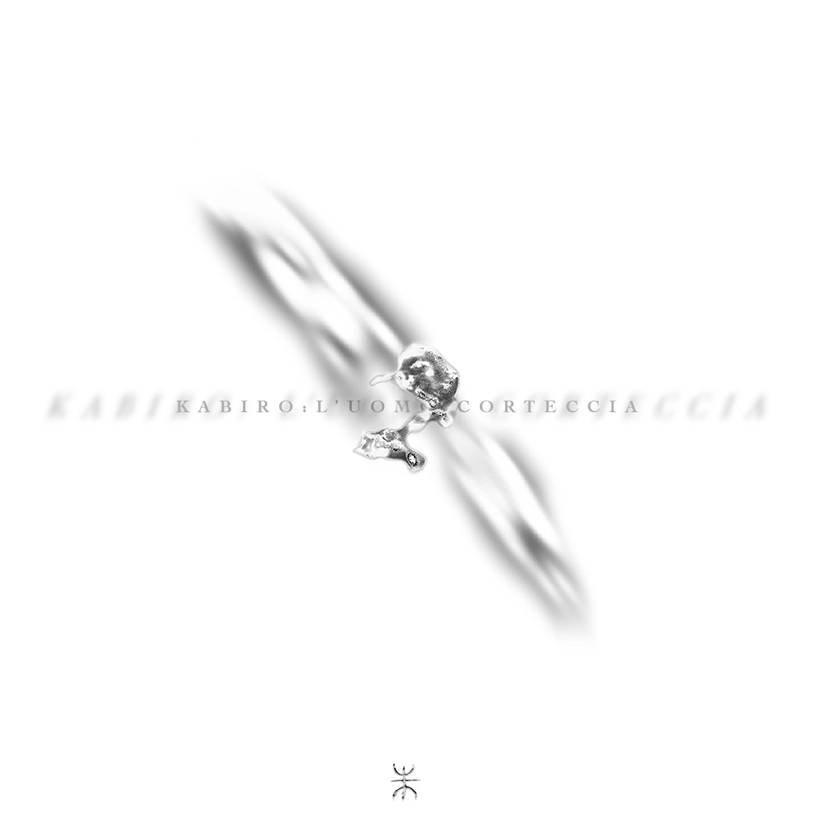

Giustino Kabiro is a Cortex-Cracker operator, performer and outer-sound dimension researcher. After the seminal electro/spoken/punk aggression of his duo Compulsive Pene Madonna, he has navigated a prolific solo path defined by visceral live performances and a series of the most diverse releases. His practice is a rustic cypher in which noise abruptions and calm vast scapes are interconnected as a language spoken by a machinic else.